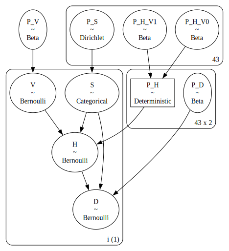

import pandas as pd
import numpy as np
import pgmpy
import daft
from itertools import product
import yaml
with open("/Users/JO/PhD/nsicu-transfers/data/config.yaml", "r") as file:
config = yaml.safe_load(file)
file_path = config["data"]["file_path"]Bayesiska nätverk I
Problemets struktur (DAG)
Här används 4 variabler: väderminima (V), transportmodalitet (H), avsändande sjukhus (S) samt död inom 30 dagar från inskrivning på universitetssjukhuset (D). Sjukhus påverkar mekanismen med vilken transportmodalitet väljs, men styr också utfallet.
# Instantiate the PGM
pgm = daft.PGM()
pgm.add_node("hems_minima", "V", 0, 1, observed=True)
pgm.add_node("hems_ift", r"H", 1, 1, observed=True)
pgm.add_node("d30", r"D", 2, 1, observed=True)
pgm.add_node("hospital", "S", 1.5, 2, observed=True)
# Add in the edges
pgm.add_edge("hospital", "hems_ift")
pgm.add_edge("hems_minima", "hems_ift")
pgm.add_edge("hems_ift", "d30")
pgm.add_edge("hospital", "d30")
# Render
pgm.render();En titt på data sammanfattad enligt “formatet ovan”. Detta är data aktuell i slutet av okt 2024, dvs. innan kompletteringen. Just denna är ju faktiskt anonymiserad, varför den kan spridas.
# Ladda ett dataset med endast de relevanta kolumnerna
df = pd.read_csv(
file_path,
sep=";",
usecols=["hems_minima", "hems_ift", "d30", "DX_GROUP", "formatted_icu_name"]
)
# Tag bort rader med de mindre intressanta diagnoserna
df = df[df["DX_GROUP"].isin(["ASAH", "TBI", "AIS", "ICH"])]
# Tag bort diagnoskolumnen
df.drop(columns="DX_GROUP", inplace=True)
# Tag bort missing data för enkelhetens skull, just nu, i detta fall ~30 fall med missing data för väder
df.dropna(inplace=True)
# Gör om kolumner till 1/0
df["hems_minima"] = df["hems_minima"].astype(int)
df["hems_ift"] = df["hems_ift"].astype(int)
# Snyggare namn
df.rename(columns=
{
"formatted_icu_name": "S",
"d30": "D",
"hems_minima": "V",
"hems_ift": "H"
},
inplace=True)
# Spara som en csv
df.to_csv("df.csv", sep=";", index=False)
# Snabbtitt
df| D | S | V | H | |
|---|---|---|---|---|
| 0 | 0 | Hudiksvall IVA | 1 | 0 |
| 1 | 1 | Östersund IVA | 1 | 1 |
| 2 | 0 | Skövde IVA | 1 | 0 |
| 3 | 0 | Eskilstuna IVA | 1 | 0 |
| 4 | 0 | Falun IVA | 1 | 1 |
| ... | ... | ... | ... | ... |
| 1227 | 1 | Varberg IVA | 1 | 0 |
| 1228 | 0 | Falun IVA | 1 | 1 |
| 1229 | 0 | Västerås IVA | 1 | 0 |
| 1230 | 0 | Karlstad IVA | 1 | 1 |
| 1231 | 1 | Växjö IVA | 1 | 0 |
1049 rows × 4 columns
“Conditional probability tables”
Detta går säkert att göra smidigare och snyggare, men det får duga för stunden. Funktionen cond_prob_table ger “conditional probability tables” eller en “joint distribution” givet data och vilka variabler man är intresserad av. Dessutom redovisas antalet fall med de olika instansieringarna av de angivna variablerna. En konstant \(\lambda\) läggs till summeringarna för att undvika problem med summor om 0. Någon slags “smoothing” alltså som förstås bör göras bättre av flera skäl…
def cond_prob_table(df: pd.DataFrame, A: list[str] = [], B: list[str] = [], lam: float = 0.01):
"""
En funktion som skapar en "conditional probability table" för P(A|B) där A och B är listor av variabler i data df.
Om B är tom kommer en tabell för P(A) att beräknas.
lam är en konstant som adderas när antal fall givet varibler summeras, detta framförallt för att undvika problem med summor = 0.
"""
# Ta fram alla unika värden hos variablerna
levels_A = [df[a].unique() for a in A]
levels_B = [df[b].unique() for b in B]
# Ta fram den kartesiska produkten av mängderna A och B
all_combinations = pd.DataFrame(product(*levels_B, *levels_A), columns=[b for b in B] + [a for a in A])
# Räkna antal baserat på data df
counts = df.groupby(B + A).size().reset_index(name="count")
# Left join all_combinations med counts och sätt NaN:s till 0
merged = all_combinations.merge(counts, left_on=B+A, right_on=B+A, how="left").fillna(0)
# Addera en konstant (0.01) för "smoothing" och för att hantera "icke instansierade fall"
merged["count"] += + lam
# Beräkna proportionerna
if B:
merged["proportion"] = merged.groupby(B)["count"].transform(lambda x: x / x.sum())
else:
merged["proportion"] = merged["count"].transform(lambda x: x / x.sum())
return mergedLåt oss t.ex. titta på \(P(H|S,V)\):
cond_prob_table(df, A=["H"], B=["S", "V"])| S | V | H | count | proportion | |
|---|---|---|---|---|---|
| 0 | Hudiksvall IVA | 1 | 0 | 10.01 | 0.416736 |
| 1 | Hudiksvall IVA | 1 | 1 | 14.01 | 0.583264 |
| 2 | Hudiksvall IVA | 0 | 0 | 0.01 | 0.500000 |
| 3 | Hudiksvall IVA | 0 | 1 | 0.01 | 0.500000 |
| 4 | Östersund IVA | 1 | 0 | 27.01 | 0.613585 |
| ... | ... | ... | ... | ... | ... |
| 167 | Eksjö IVA | 0 | 1 | 0.01 | 0.009804 |
| 168 | Södertälje IVA | 1 | 0 | 1.01 | 0.990196 |
| 169 | Södertälje IVA | 1 | 1 | 0.01 | 0.009804 |
| 170 | Södertälje IVA | 0 | 0 | 0.01 | 0.500000 |
| 171 | Södertälje IVA | 0 | 1 | 0.01 | 0.500000 |
172 rows × 5 columns
Detta resulterar ju bland annat i galenheten att sannolikheten för en patient att bli flyttad med helikopter i Hudiksvall vid dåligt väder är 0.5, detta p.g.a. att det inte finns några fall av dåligt väder i Hudiksvall i detta väder, vilket medför att “antalet fall” sätts till 0.01 för både H = 0 och H = 1. Ett annat fall där det blir galet är:
cond_prob_table(df, A=["D"], B=["S", "H"]).iloc[:4]| S | H | D | count | proportion | |
|---|---|---|---|---|---|
| 0 | Hudiksvall IVA | 0 | 0 | 10.01 | 0.999002 |
| 1 | Hudiksvall IVA | 0 | 1 | 0.01 | 0.000998 |
| 2 | Hudiksvall IVA | 1 | 0 | 11.01 | 0.785307 |
| 3 | Hudiksvall IVA | 1 | 1 | 3.01 | 0.214693 |
Alltså, sannolikhetnen att dö efter landtransport är 0. Även om det finns andra confounders som saknas här är det orimligt och har att göra med det relativt låga antalet transporter. Om man adderar 1 (istället för 0.01) blir det rimligare just för denna query, men mindre rimligt för andra queries såsom \(P(H|S,V=0)\).
En övning i inferens
Säg att vi vill ha \(P(D|H)\) från \(P(V)P(S)P(H|S,V)P(D|S,H)\), vilket man kan nå med “variable elimination”:
Först “joinar” man t.ex. faktorer med variabeln \(S\) och “summerar bort den”.
\(\sum_{S}P(S)P(H|S,V)P(D|S,H) = \sum_{S}P(S,H,D|V) = P(H,D|V) = f_{1}(H,D,V)\)
Därefter samma procedur fast för \(V\)
\(\sum_{V}P(V)f_{1}(H,D,V) = \sum_{V}P(V)P(H,D|V) = \sum_{V}P(V,H,D) = P(D,H)\)
Som slutligen behöver normaliseras:
\(P(D,H) \frac{1}{P(H)} = P(D|H)\)
Så, låt oss testa att göra denna procedur i python…
\(P(S)\):
PS = cond_prob_table(df, A=["S"])
PS| S | count | proportion | |
|---|---|---|---|
| 0 | Hudiksvall IVA | 24.01 | 0.022879 |
| 1 | Östersund IVA | 52.01 | 0.049560 |
| 2 | Skövde IVA | 44.01 | 0.041937 |
| 3 | Eskilstuna IVA | 27.01 | 0.025738 |
| 4 | Falun IVA | 77.01 | 0.073383 |
| 5 | Kalix IVA | 12.01 | 0.011444 |
| 6 | Lycksele IVA | 17.01 | 0.016209 |
| 7 | Karlskoga IVA | 8.01 | 0.007633 |
| 8 | Lidköping IVA | 9.01 | 0.008586 |
| 9 | Skellefteå IVA | 32.01 | 0.030502 |
| 10 | Sunderby IVA | 37.01 | 0.035267 |
| 11 | Växjö IVA | 11.01 | 0.010491 |
| 12 | Trollhättan IVA | 13.01 | 0.012397 |
| 13 | Örebro IVA | 32.01 | 0.030502 |
| 14 | Karlskrona IVA | 25.01 | 0.023832 |
| 15 | Jönköping IVA | 51.01 | 0.048607 |
| 16 | Mora IVA | 45.01 | 0.042890 |
| 17 | Gävle IVA | 29.01 | 0.027644 |
| 18 | Kristianstad IVA | 21.01 | 0.020020 |
| 19 | Helsingborg IVA | 19.01 | 0.018115 |
| 20 | Kalmar IVA | 66.01 | 0.062901 |
| 21 | Nyköping IVA | 14.01 | 0.013350 |
| 22 | Sundsvall IVA | 44.01 | 0.041937 |
| 23 | Gällivare IVA | 20.01 | 0.019067 |
| 24 | Sollefteå IVA | 11.01 | 0.010491 |
| 25 | Västerås IVA | 29.01 | 0.027644 |
| 26 | Borås IVA | 12.01 | 0.011444 |
| 27 | Visby IVA | 30.01 | 0.028596 |
| 28 | Lindesberg IVA | 11.01 | 0.010491 |
| 29 | Bollnäs IVA | 19.01 | 0.018115 |
| 30 | Karlstad IVA | 58.01 | 0.055278 |
| 31 | Norrtälje IVA | 5.01 | 0.004774 |
| 32 | Värnamo IVA | 3.01 | 0.002868 |
| 33 | Halmstad IVA | 29.01 | 0.027644 |
| 34 | Örnsköldsvik IVA | 24.01 | 0.022879 |
| 35 | Piteå IVA | 14.01 | 0.013350 |
| 36 | Torsby IVA | 14.01 | 0.013350 |
| 37 | Ystad IVA | 5.01 | 0.004774 |
| 38 | Varberg IVA | 25.01 | 0.023832 |
| 39 | Ljungby IVA | 8.01 | 0.007633 |
| 40 | Arvika IVA | 6.01 | 0.005727 |
| 41 | Eksjö IVA | 16.01 | 0.015256 |
| 42 | Södertälje IVA | 1.01 | 0.000962 |
\(P[H|S,V):\)
PH_SV = cond_prob_table(df, A=["H"], B=["S", "V"])
PH_SV| S | V | H | count | proportion | |
|---|---|---|---|---|---|
| 0 | Hudiksvall IVA | 1 | 0 | 10.01 | 0.416736 |
| 1 | Hudiksvall IVA | 1 | 1 | 14.01 | 0.583264 |
| 2 | Hudiksvall IVA | 0 | 0 | 0.01 | 0.500000 |
| 3 | Hudiksvall IVA | 0 | 1 | 0.01 | 0.500000 |
| 4 | Östersund IVA | 1 | 0 | 27.01 | 0.613585 |
| ... | ... | ... | ... | ... | ... |
| 167 | Eksjö IVA | 0 | 1 | 0.01 | 0.009804 |
| 168 | Södertälje IVA | 1 | 0 | 1.01 | 0.990196 |
| 169 | Södertälje IVA | 1 | 1 | 0.01 | 0.009804 |
| 170 | Södertälje IVA | 0 | 0 | 0.01 | 0.500000 |
| 171 | Södertälje IVA | 0 | 1 | 0.01 | 0.500000 |
172 rows × 5 columns
\(P[D|S,H):\)
PD_SH = cond_prob_table(df, A=["D"], B=["S", "H"])
PD_SH| S | H | D | count | proportion | |
|---|---|---|---|---|---|
| 0 | Hudiksvall IVA | 0 | 0 | 10.01 | 0.999002 |
| 1 | Hudiksvall IVA | 0 | 1 | 0.01 | 0.000998 |
| 2 | Hudiksvall IVA | 1 | 0 | 11.01 | 0.785307 |
| 3 | Hudiksvall IVA | 1 | 1 | 3.01 | 0.214693 |
| 4 | Östersund IVA | 0 | 0 | 32.01 | 0.914049 |
| ... | ... | ... | ... | ... | ... |
| 167 | Eksjö IVA | 1 | 1 | 0.01 | 0.500000 |
| 168 | Södertälje IVA | 0 | 0 | 1.01 | 0.990196 |
| 169 | Södertälje IVA | 0 | 1 | 0.01 | 0.009804 |
| 170 | Södertälje IVA | 1 | 0 | 0.01 | 0.500000 |
| 171 | Södertälje IVA | 1 | 1 | 0.01 | 0.500000 |
172 rows × 5 columns
\(P(S) × P(H|S,V) = P(S,H|V)\):
result = pd.merge(PS, PH_SV, on="S")
result["proportion"] = result["proportion_x"] * result["proportion_y"]
PSH_V = result[["V", "S", "H", "proportion"]]
PSH_V| V | S | H | proportion | |
|---|---|---|---|---|
| 0 | 1 | Hudiksvall IVA | 0 | 0.009535 |
| 1 | 1 | Hudiksvall IVA | 1 | 0.013345 |
| 2 | 0 | Hudiksvall IVA | 0 | 0.011440 |
| 3 | 0 | Hudiksvall IVA | 1 | 0.011440 |
| 4 | 1 | Östersund IVA | 0 | 0.030409 |
| ... | ... | ... | ... | ... |
| 167 | 0 | Eksjö IVA | 1 | 0.000150 |
| 168 | 1 | Södertälje IVA | 0 | 0.000953 |
| 169 | 1 | Södertälje IVA | 1 | 0.000009 |
| 170 | 0 | Södertälje IVA | 0 | 0.000481 |
| 171 | 0 | Södertälje IVA | 1 | 0.000481 |
172 rows × 4 columns
\(P(H|S,V) × P(D|S,H) = P(S,H,D|V)\):
result = pd.merge(PSH_V, PD_SH, on=["S", "H"])
result["proportion"] = result["proportion_x"] * result["proportion_y"]
result
PSHD_V = result[["V", "S", "H", "D", "proportion"]]
PSHD_V| V | S | H | D | proportion | |
|---|---|---|---|---|---|
| 0 | 1 | Hudiksvall IVA | 0 | 0 | 0.009525 |
| 1 | 1 | Hudiksvall IVA | 0 | 1 | 0.000010 |
| 2 | 1 | Hudiksvall IVA | 1 | 0 | 0.010480 |
| 3 | 1 | Hudiksvall IVA | 1 | 1 | 0.002865 |
| 4 | 0 | Hudiksvall IVA | 0 | 0 | 0.011428 |
| ... | ... | ... | ... | ... | ... |
| 339 | 1 | Södertälje IVA | 1 | 1 | 0.000005 |
| 340 | 0 | Södertälje IVA | 0 | 0 | 0.000476 |
| 341 | 0 | Södertälje IVA | 0 | 1 | 0.000005 |
| 342 | 0 | Södertälje IVA | 1 | 0 | 0.000241 |
| 343 | 0 | Södertälje IVA | 1 | 1 | 0.000241 |
344 rows × 5 columns
\(\sum_{S}P(S,H,D|V) = P(H,D|V)\)
PHD_V = PSHD_V.groupby(["V", "H", "D"], as_index=False)["proportion"].sum()
PHD_V| V | H | D | proportion | |
|---|---|---|---|---|
| 0 | 0 | 0 | 0 | 0.791465 |
| 1 | 0 | 0 | 1 | 0.165071 |
| 2 | 0 | 1 | 0 | 0.037440 |
| 3 | 0 | 1 | 1 | 0.006025 |
| 4 | 1 | 0 | 0 | 0.590274 |
| 5 | 1 | 0 | 1 | 0.136451 |
| 6 | 1 | 1 | 0 | 0.234217 |
| 7 | 1 | 1 | 1 | 0.039057 |
\(P(V) × P(H,D|V) = P(V,H,D)\):
PV = cond_prob_table(df, A=["V"])
result = pd.merge(PV, PHD_V, on=["V"])
result["proportion"] = result["proportion_x"] * result["proportion_y"]
PVHD = result[["V", "H", "D", "proportion"]]
PVHD| V | H | D | proportion | |
|---|---|---|---|---|
| 0 | 1 | 0 | 0 | 0.509804 |
| 1 | 1 | 0 | 1 | 0.117849 |
| 2 | 1 | 1 | 0 | 0.202287 |
| 3 | 1 | 1 | 1 | 0.033733 |
| 4 | 0 | 0 | 0 | 0.107898 |
| 5 | 0 | 0 | 1 | 0.022504 |
| 6 | 0 | 1 | 0 | 0.005104 |
| 7 | 0 | 1 | 1 | 0.000821 |
\(\sum_{V} P(V,H,D) = P(H,D)\):
PDH = PVHD.groupby(["H", "D"], as_index=False)["proportion"].sum()
PDH| H | D | proportion | |
|---|---|---|---|
| 0 | 0 | 0 | 0.617702 |
| 1 | 0 | 1 | 0.140353 |
| 2 | 1 | 0 | 0.207391 |
| 3 | 1 | 1 | 0.034554 |
\(P(D,H) \frac{1}{P(H)} = P(D|H)\)
PH = cond_prob_table(df, A=["H"])
result = pd.merge(PDH, PH, on=["H"])
result["proportion"] = result["proportion_x"] / result["proportion_y"]
PH_D = result[["H", "D", "proportion"]]
PH_D| H | D | proportion | |
|---|---|---|---|
| 0 | 0 | 0 | 0.816087 |
| 1 | 0 | 1 | 0.185430 |
| 2 | 1 | 0 | 0.853133 |
| 3 | 1 | 1 | 0.142144 |
Stämmer det om vi “räknar ut” \(P(D|H)\) direkt?
cond_prob_table(df, A=["D"], B=["H"])| H | D | count | proportion | |
|---|---|---|---|---|
| 0 | 0 | 0 | 647.01 | 0.814854 |
| 1 | 0 | 1 | 147.01 | 0.185146 |
| 2 | 1 | 0 | 219.01 | 0.858795 |
| 3 | 1 | 1 | 36.01 | 0.141205 |
Bra nära. Jag kan tänka mig att skillanden beror på “smoothing”.
Interventionella fördelningar
Det här är delvis höjt i dunkel för mig. Jag har tittat på många timmar av föreläsningar om koncept som SCM, do-operator, counterfactual interventions osv. Någa föreläsningar följer samma format: * Först försöker man övertyga lyssnaren om att association och kausalitet är olika saker, vilket ofta tillägnas oproportionerligt lång tid med detaljerad argumentation. * Sedan ritar man upp en DAG för ett trivialt exempel, ofta något med rökning/lungcancer. * Nu följer i regel en kvarts ordsallad om något eller några av koncepten: Markov blanket, parental nodes, indentification osv. Mycket notation och lite intuition. * I bästa fall definieras en sannolikhet innehållandes \(do(\text{nånting})\) om till en betingad sannolikhet med bara \(\text{nånting}\) istället.
Det fascinerande är att nästan ingen av föreläsningarna ger ett konkret exempel för hur ATE kan beräknas givet tillgänglig data ens i det enklaste fall. Hursomhelst,
Om P(D|do(H=h)) är intressant:
Grundidén är alltså att göra \(P(D|do(H=h))\) till något vi kan räkna på eller se i data.
\(P(D=d|do(H=h)) = \sum_{s}P(D=d|H=h,S=s)P(s)\)
PD_SH = cond_prob_table(df, A=["D"], B=["S", "H"])
PS = cond_prob_table(df, A=["S"])
result = pd.merge(PD_SH, PS, on="S", how="left")
result["proportion"] = result["proportion_x"] * result["proportion_y"]
PDS_H = result[["D", "S", "H", "proportion"]]
PD_H = PDS_H.groupby(["H", "D"], as_index=False)["proportion"].sum()
PD_H| H | D | proportion | |
|---|---|---|---|
| 0 | 0 | 0 | 0.830020 |
| 1 | 0 | 1 | 0.169980 |
| 2 | 1 | 0 | 0.750107 |
| 3 | 1 | 1 | 0.249893 |
Alltså får vi att skillnanden i 30d-mortalitet, P(D=1|do(H=1)) - P(D=1|do(H=0)), är cirka 8% till fördel för landtransporter. Detta att jämföra med den “ojusterade” skillnaden på 4% i den andra riktningen.
Genom att summera över avsändande sjukhus beskriver detta behandlingseffekten i situationen där man inte vet vilket sjukhus patienten skickas från.
Intressant nog är ju V helt oanvänd i denna övning…
Förklaringen till varför landtransporter ser så bra ut är åtminstone delvis denna: där finns ett antal sjukhus som inte har några helikoptertransporter noterade. Närmare bestämt 15 st sjukhus med totalt 313 patienter.
few_H = cond_prob_table(df, A=["H"], B=["S"]).query("H == 1 & count < 1")["S"].values
df["S"].isin(few_H).sum()313I dessa fall kommer alltså \(P(D=1|H=1, S=s) = 0.5\)
PD1_SH1 = cond_prob_table(df, A=["D"], B=["S", "H"]).query("H == 1 & D == 1")
PD1_SH1[PD1_SH1["S"].isin(few_H)]| S | H | D | count | proportion | |
|---|---|---|---|---|---|
| 47 | Växjö IVA | 1 | 1 | 0.01 | 0.5 |
| 59 | Karlskrona IVA | 1 | 1 | 0.01 | 0.5 |
| 75 | Kristianstad IVA | 1 | 1 | 0.01 | 0.5 |
| 79 | Helsingborg IVA | 1 | 1 | 0.01 | 0.5 |
| 83 | Kalmar IVA | 1 | 1 | 0.01 | 0.5 |
| 91 | Sundsvall IVA | 1 | 1 | 0.01 | 0.5 |
| 115 | Lindesberg IVA | 1 | 1 | 0.01 | 0.5 |
| 127 | Norrtälje IVA | 1 | 1 | 0.01 | 0.5 |
| 131 | Värnamo IVA | 1 | 1 | 0.01 | 0.5 |
| 135 | Halmstad IVA | 1 | 1 | 0.01 | 0.5 |
| 139 | Örnsköldsvik IVA | 1 | 1 | 0.01 | 0.5 |
| 151 | Ystad IVA | 1 | 1 | 0.01 | 0.5 |
| 155 | Varberg IVA | 1 | 1 | 0.01 | 0.5 |
| 159 | Ljungby IVA | 1 | 1 | 0.01 | 0.5 |
| 167 | Eksjö IVA | 1 | 1 | 0.01 | 0.5 |
| 171 | Södertälje IVA | 1 | 1 | 0.01 | 0.5 |
Att jämföra med cirka 0.15 för de övriga sjukhusen…
PD1_SH1[~PD1_SH1["S"].isin(few_H)].proportion.mean()0.1489234874781996Då \(P(D|H=h)\) beräknats genom att summera över S kommer mortalitetsrisken att blåsas upp.
“Parameteriserad modell”
Sannolikt har jag missförstått mycket om vad interventionella fördelningar är och hur de beräknas. Men en insikt som jag tror håller är att någon form av parameterisering behövs för att hantera situationer där det finns få eller inga datapunkter. Det kanske lättast låter sig göras i ett “PPL” som pymc?
Modell med pymc
Övergripande idé
Variablerna V, H, D, S definieras som parametrar med Bernoullifördelningen respektive den kategoriska fördelningen. Priors för dessa parametar får vara betafördelade respektive Dirichletfördelade:
import pymc as pm
import arviz as az
with pm.Model(coords={"i": [0]}) as m:
P_V = pm.Beta("P_V", alpha = 10, beta = 2)
V = pm.Bernoulli("V", p=P_V, dims="i")
P_S = pm.Dirichlet("P_S", a=np.ones(shape=(43,) ))
S = pm.Categorical("S", p=P_S, dims="i")
# Priorn för P_H beror på V...
P_H_V0 = pm.Beta("P_H_V0", alpha = 0.2, beta = 10, shape=(43,))
P_H_V1 = pm.Beta("P_H_V1", alpha = 1, beta = 3, shape=(43,))
P_H = pm.Deterministic("P_H", pm.math.stack([P_H_V0, P_H_V1], axis=1))
H = pm.Bernoulli("H", p=P_H[S, V], dims="i")
P_D = pm.Beta("P_D", alpha = 2, beta = 5, shape=(43,2))
D = pm.Bernoulli("D", p=P_D[S,H], dims="i")
m.to_graphviz()
Därefter presenteras modellen data och parametrarna estimeras med No U-Turn Sampling (NUTS).
from pymc import do, observe
V_obs = df["V"]
H_obs = df["H"]
D_obs = df["D"]
S_obs, S_label = pd.factorize(df["S"])
m_inference = observe(m, {"S": S_obs, "V": V_obs, "H": H_obs, "D": D_obs})
m_inference.set_dim("i", len(df), coord_values=np.arange(len(df)))
with m_inference:
idata = pm.sample(idata_kwargs={"log_likelihood": True})INFO:pymc.sampling.mcmc:Auto-assigning NUTS sampler...
INFO:pymc.sampling.mcmc:Initializing NUTS using jitter+adapt_diag...
INFO:pymc.sampling.mcmc:Multiprocess sampling (4 chains in 4 jobs)
INFO:pymc.sampling.mcmc:NUTS: [P_V, P_S, P_H_V0, P_H_V1, P_D]
INFO:pymc.sampling.mcmc:Sampling 4 chains for 1_000 tune and 1_000 draw iterations (4_000 + 4_000 draws total) took 77 seconds.Som ett exempel kan man se på posteriors för parametern P_H, alltså sannolikheten för lufttransport (givet sjukhus och väder), som har dimensionerna (sjukhus, väder).
az.summary(idata, var_names=["P_H"]).head(12)| mean | sd | hdi_3% | hdi_97% | mcse_mean | mcse_sd | ess_bulk | ess_tail | r_hat | |
|---|---|---|---|---|---|---|---|---|---|
| P_H[0, 0] | 0.020 | 0.044 | 0.000 | 0.095 | 0.001 | 0.001 | 2170.0 | 1459.0 | 1.0 |
| P_H[0, 1] | 0.536 | 0.089 | 0.378 | 0.713 | 0.001 | 0.001 | 6481.0 | 2501.0 | 1.0 |
| P_H[1, 0] | 0.012 | 0.026 | 0.000 | 0.053 | 0.000 | 0.000 | 2199.0 | 1752.0 | 1.0 |
| P_H[1, 1] | 0.374 | 0.070 | 0.250 | 0.512 | 0.001 | 0.001 | 6953.0 | 2858.0 | 1.0 |
| P_H[2, 0] | 0.013 | 0.029 | 0.000 | 0.060 | 0.000 | 0.000 | 2585.0 | 1748.0 | 1.0 |
| P_H[2, 1] | 0.580 | 0.073 | 0.443 | 0.719 | 0.001 | 0.001 | 7210.0 | 2630.0 | 1.0 |
| P_H[3, 0] | 0.016 | 0.033 | 0.000 | 0.074 | 0.000 | 0.000 | 1937.0 | 1668.0 | 1.0 |
| P_H[3, 1] | 0.310 | 0.084 | 0.154 | 0.466 | 0.001 | 0.001 | 6064.0 | 2411.0 | 1.0 |
| P_H[4, 0] | 0.011 | 0.024 | 0.000 | 0.049 | 0.000 | 0.000 | 2266.0 | 1426.0 | 1.0 |
| P_H[4, 1] | 0.506 | 0.058 | 0.402 | 0.621 | 0.001 | 0.000 | 7360.0 | 2420.0 | 1.0 |
| P_H[5, 0] | 0.017 | 0.038 | 0.000 | 0.079 | 0.001 | 0.001 | 2189.0 | 1591.0 | 1.0 |
| P_H[5, 1] | 0.133 | 0.086 | 0.005 | 0.286 | 0.001 | 0.001 | 5722.0 | 2030.0 | 1.0 |
Detta att jämföra med “empiriska” proportioner från data genom cond_prob_table:
cond_prob_table(df, A=["H"], B=["S", "V"]).query("H == 1")[["S", "V", "proportion"]].head(12)| S | V | proportion | |
|---|---|---|---|
| 1 | Hudiksvall IVA | 1 | 0.583264 |
| 3 | Hudiksvall IVA | 0 | 0.500000 |
| 5 | Östersund IVA | 1 | 0.386415 |
| 7 | Östersund IVA | 0 | 0.001247 |
| 9 | Skövde IVA | 1 | 0.615325 |
| 11 | Skövde IVA | 0 | 0.001992 |
| 13 | Eskilstuna IVA | 1 | 0.320144 |
| 15 | Eskilstuna IVA | 0 | 0.004950 |
| 17 | Falun IVA | 1 | 0.521733 |
| 19 | Falun IVA | 0 | 0.001247 |
| 21 | Kalix IVA | 1 | 0.091652 |
| 23 | Kalix IVA | 0 | 0.009804 |
Generell så estimeras \(P(H=1|S,V)\) lägre i modellen jämfört med “rådata”. En annan skillnad är att i de fall där det saknas fall av t.ex. dåligt väder kommer cond_prob_table sätta P(H|S,V=0) till 0.5 medan pymc-modellen kommer ge ett värde nära medelvärdet för priorn (cirka 0.02).
Interventioner
Jag är fortfarande lite osäker på hur detta fungerar i paketet. pymc har en funktion do för “graph mutilation”. Principen är, vad jag förstår:
- Ta en modell och “träna” den på ett dataset. Dvs. den får en uppsättning parameterestimat.
- Applicera
dopå modellen. I det här fallet sätts \(H\) till 0 eller 1 för alla 1049 patienter i data. Funktionen tar bort ingående påverkan på H i grafen, dvs. i detta fall \(H \rarr S\). Genom att också sätta S och V till de faktiska observationerna kommer ingående effekter tas för dessa noder. Notera att V försvinner ur grafen då dess enda effekt är på H, vilket vi ju har satt till ett fast värde. Nedan en visualisering av denna modell.
m_counterfactual = do(m_inference,{"S": S_obs, "V": V_obs})
m_H0 = do(m_counterfactual, {"H": np.zeros(len(df), dtype="int32")}, prune_vars=True)
m_H1 = do(m_counterfactual, {"H": np.ones(len(df), dtype="int32")}, prune_vars=True)
m_H1.to_graphviz()Låt oss fortsätta…
- Härnäst samplas posteriors från dessa modeller. Man kan här räkna ut ATE. Det skulle kanske vara bättre att lägga till ett steg till i modellen där \(P_{i}(D=1|do(H=h), Z=z_{i})\) explicit definieras och sparas. Där är alltså \(i\) är utgör en unik patient och \(z_{i}\) är denna patients observerade sjukhus (eller andra relevanta variabler man har i modellen).
SEED=1989
idata_H0 = pm.sample_posterior_predictive(
trace=idata,
model=m_H0,
predictions=True,
random_seed=SEED,
)
idata_H1 = pm.sample_posterior_predictive(
trace=idata,
model=m_H1,
predictions=True,
random_seed=SEED,
)
ATE = idata_H1.predictions - idata_H0.predictions
ATE.D.mean()INFO:pymc.sampling.forward:Sampling: [D]
INFO:pymc.sampling.forward:Sampling: [D]<xarray.DataArray 'D' ()> Size: 8B array(0.03460176)
ATE skulle då bli: \(\mathrm{E}(P(D=1|do(H=1), S) - P(D=1|do(H=1), S)) = 0.035\), dvs. ganska stor skillnad (jmfr 10%) om man bara använder CPTs….
Saker jag inte begriper
- Hela konceptet, sannolikt…
- Vad är poängen med att ha med P(V) i detta fall?
- Skillnanden mellan Pearls “rung 2” och “rung 3”, dvs. “interventional” och “counterfactual reasoning”.
- Hur jag ska hantera kontinuerliga confounders (t.ex SAPS 3)
- OM pymc-approachen är någorlunda korrekt: hade det inte varit rimligare att ha gemensamma priors för t.ex. parametrarna \(\alpha\) och \(\beta\) i betafördelningarna? Låt oss exempelvis titta på parametern \(P(D=1|S=\text{Jönköping}, H)\). Jönköping har id = 15.
az.summary(idata, var_names=["P_D"]).iloc[30:32]| mean | sd | hdi_3% | hdi_97% | mcse_mean | mcse_sd | ess_bulk | ess_tail | r_hat | |
|---|---|---|---|---|---|---|---|---|---|
| P_D[15, 0] | 0.211 | 0.053 | 0.112 | 0.312 | 0.001 | 0.000 | 7796.0 | 2690.0 | 1.0 |
| P_D[15, 1] | 0.248 | 0.148 | 0.012 | 0.514 | 0.002 | 0.001 | 6848.0 | 2233.0 | 1.0 |
Dvs. i princip säger modellen (se P_D[15, 1] där 15 = Jönköping, 1 = HEMS) att risken för Jönköpingspatieterna att dö är högre om de flyger. Stämmer det med observationerna?
cond_prob_table(df, A=["D"], B=["S", "H"]).query("S == 'Jönköping IVA'")| S | H | D | count | proportion | |
|---|---|---|---|---|---|
| 60 | Jönköping IVA | 0 | 0 | 40.01 | 0.799880 |
| 61 | Jönköping IVA | 0 | 1 | 10.01 | 0.200120 |
| 62 | Jönköping IVA | 1 | 0 | 1.01 | 0.990196 |
| 63 | Jönköping IVA | 1 | 1 | 0.01 | 0.009804 |
Inte särskilt! Först och främst flygs bara 1/51 Jönköpingspatienter. Den patienten överlever. Eftersom det finns så lite data här kommer priorn i princip vara orörd. Det verkar rimligare att estimatet för P_D[15,1] ska påverkas mer av det “nationella värdet” \(P(D|S,H=1)\) i avsaknad av annan evidens. Exempelvis genom att definiera parametern som
\(P(D|H, S) \sim Beta(\alpha_{H,S} = \tau_{H}, \beta_{H,S} = \phi_{H}),\)
\(\tau_{H}, \phi_{H} \sim \text{nånting smart...}\)
Låt oss testa. I ett första försök får hyperparametrarna vara fördelade \(\sim Unif(0.5, 10)\)
with pm.Model(coords={"i": [0]}) as m2:
P_V = pm.Beta("P_V", alpha = 10, beta = 2)
V = pm.Bernoulli("V", p=P_V, dims="i")
P_S = pm.Dirichlet("P_S", a=np.ones(shape=(43,) ))
S = pm.Categorical("S", p=P_S, dims="i")
# Priorn för P_H beror på V...
P_H_V0 = pm.Beta("P_H_V0", alpha = 0.2, beta = 10, shape=(43,))
P_H_V1 = pm.Beta("P_H_V1", alpha = 1, beta = 3, shape=(43,))
P_H = pm.Deterministic("P_H", pm.math.stack([P_H_V0, P_H_V1], axis=1))
H = pm.Bernoulli("H", p=P_H[S, V], dims="i")
tau_0 = pm.Uniform("tau_0", 0.5, 10)
phi_0 = pm.Uniform("phi_0", 0.5, 10)
tau_1 = pm.Uniform("tau_1", 0.5, 10)
phi_1 = pm.Uniform("phi_1", 0.5, 10)
P_D_H0 = pm.Beta("P_D_H0", alpha = tau_0, beta = phi_0, shape=(43,))
P_D_H1 = pm.Beta("P_D_H1", alpha = tau_1, beta = phi_1, shape=(43,))
P_D = pm.Deterministic("P_D", pm.math.stack([P_D_H0, P_D_H1], axis=1))
D = pm.Bernoulli("D", p=P_D[S,H], dims="i")
#
V_obs = df["V"]
H_obs = df["H"]
D_obs = df["D"]
S_obs, S_label = pd.factorize(df["S"])
m2_inference = observe(m2, {"S": S_obs, "V": V_obs, "H": H_obs, "D": D_obs})
m2_inference.set_dim("i", len(df), coord_values=np.arange(len(df)))
with m2_inference:
idata2 = pm.sample(idata_kwargs={"log_likelihood": True})INFO:pymc.sampling.mcmc:Auto-assigning NUTS sampler...
INFO:pymc.sampling.mcmc:Initializing NUTS using jitter+adapt_diag...
INFO:pymc.sampling.mcmc:Multiprocess sampling (4 chains in 4 jobs)
INFO:pymc.sampling.mcmc:NUTS: [P_V, P_S, P_H_V0, P_H_V1, tau_0, phi_0, tau_1, phi_1, P_D_H0, P_D_H1]
INFO:pymc.sampling.mcmc:Sampling 4 chains for 1_000 tune and 1_000 draw iterations (4_000 + 4_000 draws total) took 94 seconds.Det visar sig att \(P(D=1|H=1, S=\text{Jönköping})\) hamnar betydligt närmare det nationella snittet (0.141).
az.summary(idata2, var_names=["P_D"]).iloc[30:32]| mean | sd | hdi_3% | hdi_97% | mcse_mean | mcse_sd | ess_bulk | ess_tail | r_hat | |
|---|---|---|---|---|---|---|---|---|---|
| P_D[15, 0] | 0.200 | 0.050 | 0.108 | 0.294 | 0.001 | 0.000 | 9543.0 | 2689.0 | 1.0 |
| P_D[15, 1] | 0.152 | 0.113 | 0.000 | 0.358 | 0.002 | 0.001 | 4273.0 | 2139.0 | 1.0 |
Vad skulle detta ha för betydelse för den interventionella fördelningen \(P(D|do(H=h),S)\)?
m2_counterfactual = do(m2_inference,{"S": S_obs, "V": V_obs})
m2_H0 = do(m2_counterfactual, {"H": np.zeros(len(df), dtype="int32")}, prune_vars=True)
m2_H1 = do(m2_counterfactual, {"H": np.ones(len(df), dtype="int32")}, prune_vars=True)
idata2_H0 = pm.sample_posterior_predictive(
idata2,
model=m2_H0,
predictions=True,
var_names=["D"],
random_seed=SEED,
)
idata2_H1 = pm.sample_posterior_predictive(
idata2,
model=m2_H1,
predictions=True,
var_names=["D"],
random_seed=SEED,
)
ATE2 = idata2_H1.predictions - idata2_H0.predictions
ATE2.D.mean()INFO:pymc.sampling.forward:Sampling: [D]
INFO:pymc.sampling.forward:Sampling: [D]<xarray.DataArray 'D' ()> Size: 8B array(-0.01924261)
Nu -0.019 jmfört 0.035 i tidigare försök…
Kommande steg
Givet att jag lyckas reda ut kvarvarande frågetecken och är på rätt spår med modellen: 1. Bygg ut den med fler confounders. 2. Bygg ut den med “missing data handling” (andelen patienter med missing data kommer vara 5-15% beroende på hur många variabler som används i modellen)